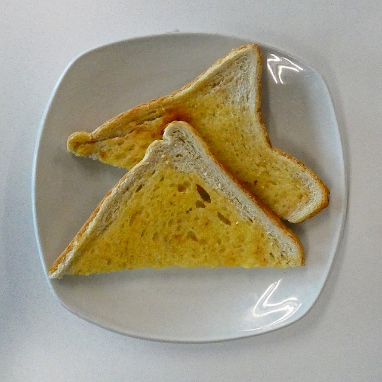

How to Make Buttered Toast: A guide for lazy people with little motivation (like me!)

One of the most basic dishes a lazy chef must know how to prepare.
Buttered toast is a clasic in many cultures around the globe. You should really know how to do it.
Ingredients:
- 2 slices of sandwich bread
- Butter
Steps:
The steps part assumes you have a pan, a stove and a butter knife.
- First, start your stove to medium heat, place your pan and let it heat for about 3 minutes.
- Then open the butter package, get the butter knife and add as much butter as you want on one side of the bread.
- After you are done adding your butter place the bread with the buttered side on the pan.
- Be careful, don't let it cook for too long as butter burns quickly.
- Once it's done, cook the other side
\
- Repeat the process again for the other slice of bread
- Enjoy your bread!
Back to Home